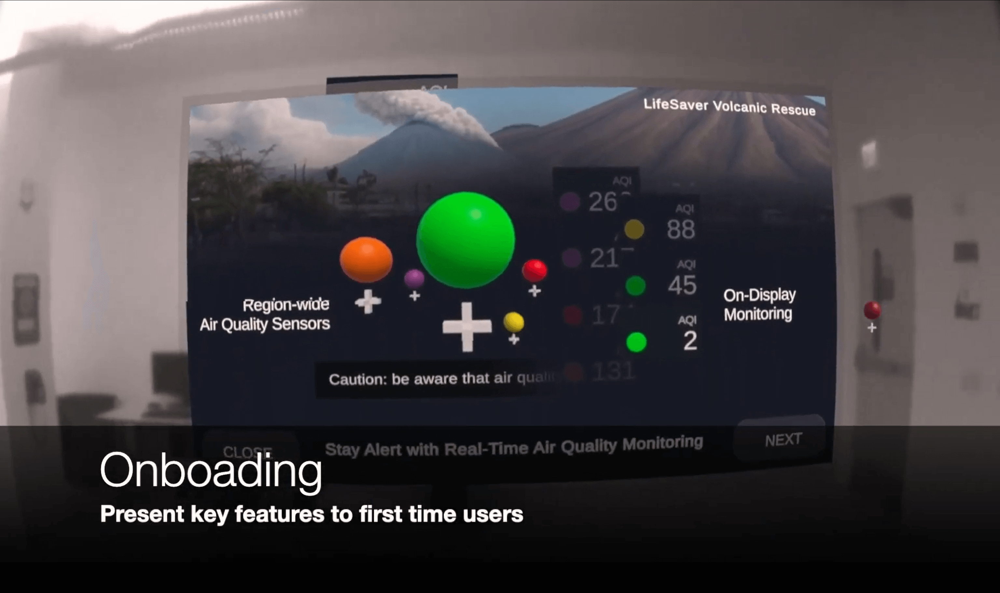
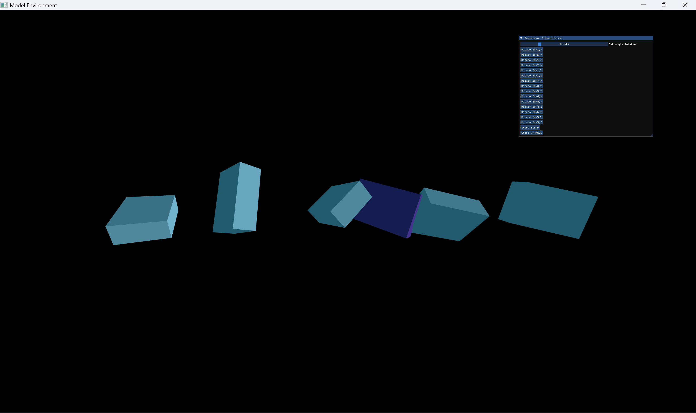
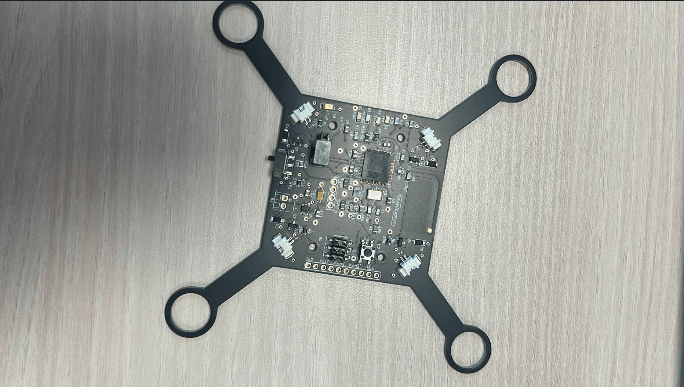
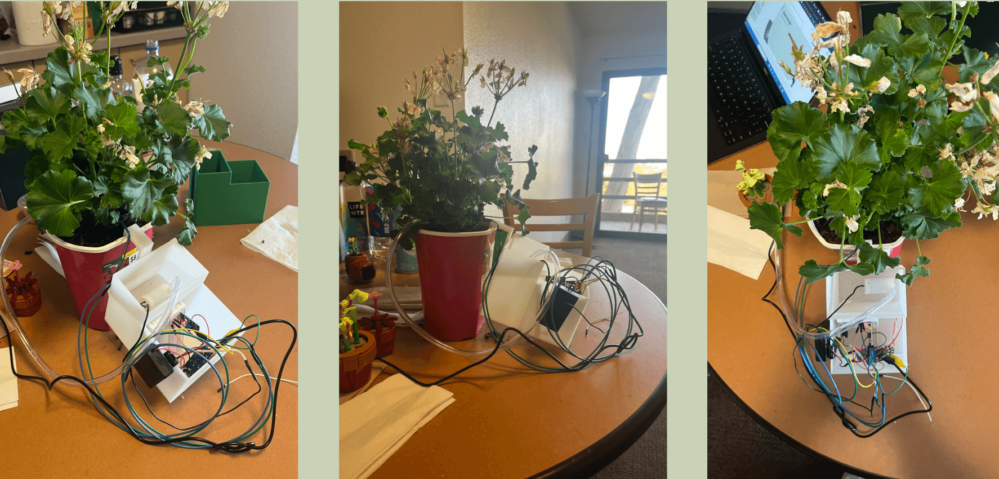

About:
Hey, I am a 4th year MATH-CS major in Muir. My hobbies include programming, video games, board games and game development. Within the realm of CS I enjoy embedded systems and computer graphics. Some video games I am currently playing right now include Overwatch 2, Marvel Rivals and Dead By Daylight. Some of my favorite board games include: Wingspan, Root and Binding of Isaac Four souls.
Portfolio:
Lifesaver App
Collaborated in a team of 4 to develop an MR app to help users navigate through hazardous AQI zones via wayfinding. Created seamless menu navigation using hand tracking, symbolic input and voice recognition with Meta XR. Implemented tutorial for users to learn about SCBA gear in VR with a World. We won most intuitive controls and best aesthetics from a panel of faculty.
Animation Player
Program to load the skeleton and skin information of a character. Renders the skeleton of the character through forward kinematics. Renders the skin of the character through the smooth skinning algorithm. The program can also read keyframe information and correctly calculate the value of the keyframe curve to play an animation. It can also do quaternion interpolation through SLERP and CATMULL-ROM interpolations. There is also a Cloth simulator with user controls and a toggle for wind.
Quadcopter
This is a custom built quadcopter where the PCB was created through Fusion 360. Oven and hand soldered with parts placed by hand. For the programming, the communication between the quadcopter and the remote was established through radio. The remote can control the throttle, pitch, roll and yaw. It can calibrate the gimbals, arm and disarm the quad. The control system was implemented by simple PID and the PID parameters were tuned with the remote. It established 10 seconds of flight.
Automatic Watering System
A self watering plant system that uses a moisture sensor to trigger a pump to transfer water into the soil. The design of the pump holder and battery was created through Fusion 360 and was 3-D printed. The system was programmed through Arduino.
